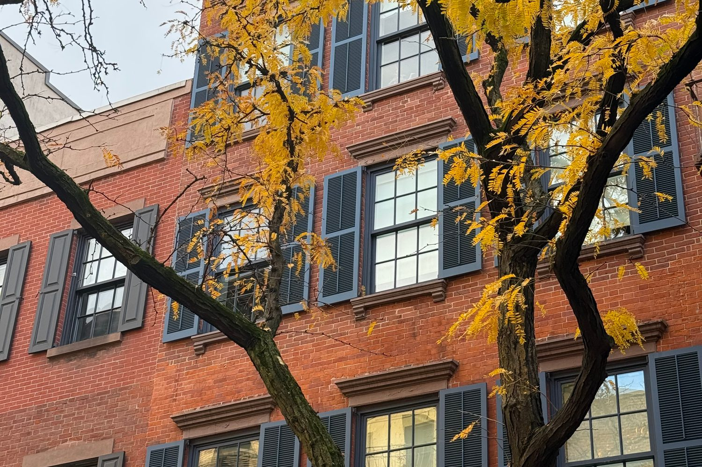

Manhattan · Neighborhood guide
SoHo Neighborhood Guide
Boundaries, cast-iron lofts, subway lines and September 2026 market figures for Manhattan's SoHo.
By Glenn Velasco
Licensed Real Estate Salesperson · Compass
Updated

SoHo runs from Houston Street down to Canal Street, between roughly Lafayette Street and Sixth Avenue. Its blocks are lined with 19th-century cast-iron loft buildings, most of them in a landmarked historic district, with co-ops, condos and newer buildings in between. This guide covers where the neighborhood begins and ends, how SoHo lofts work, how to get around, and what the market looks like now. Glenn Velasco is a Licensed Real Estate Salesperson at Compass who works with buyers, sellers and renters in SoHo.
01 / Boundaries
Where is SoHo? Boundaries and the name
SoHo is short for "South of Houston Street," a name coined in 1962 by urban planner Chester Rapkin. Sources agree that it runs from Houston Street south to Canal Street. The eastern edge is given as Crosby Street or Lafayette Street, and the western edge as West Broadway or Sixth Avenue. Neighborhood boundaries in New York City aren't officially set, so listing and data sites may draw them differently. NoHo is across Houston Street to the north, and Tribeca is across Canal Street to the south.
SoHo is in Manhattan Community District 2. Its ZIP codes are 10012, north of Broome Street, and 10013, south of Broome Street.
02 / History
A short history: cast iron, artists' lofts and the 2021 rezoning
Most of SoHo's buildings went up in the 19th century as stores, warehouses and factories, and many have cast-iron facades, largely from 1840 to 1880. Two well-known examples are the E. V. Haughwout Building at Broadway and Broome Street (1856–57), with cast iron by Daniel D. Badger, and 28 Greene Street (1873), known as the "Queen of Greene Street." A plan for the Lower Manhattan Expressway, which would have cut through the area, was defeated. The NYC Landmarks Preservation Commission designated the SoHo–Cast Iron Historic District in 1973, covering 26 blocks and about 500 buildings, and extended it in 2010. It was named a National Historic Landmark in 1978. Many side streets are still paved with Belgian blocks.
In 1971, zoning allowed artists to live and work in SoHo's manufacturing lofts as Joint Living-Work Quarters for Artists (JLWQA), and New York State's Loft Law followed in 1982. On December 15, 2021, the City Council approved the SoHo/NoHo Neighborhood Plan, which created the Special SoHo-NoHo Mixed Use District and replaced the area's old M1-5A and M1-5B zoning.
03 / Housing
SoHo lofts and apartments: co-ops and condos
Cast-iron loft buildings
SoHo's signature homes are lofts in converted 19th-century commercial buildings, often with high ceilings, large windows, open floor plans and columns. Because these buildings weren't built as housing, layouts, light, elevators and building systems vary a lot from one to the next. In the historic district, exterior changes need Landmarks approval, which is worth knowing before you plan a renovation.
Artist lofts (JLWQA) and converting to residential
Some SoHo lofts are still legally designated as Joint Living-Work Quarters for Artists (JLWQA). Under the 2021 plan, existing JLWQA use can continue, and owners have a voluntary path to convert a unit to regular residential use. According to NYC Buildings, the conversion requires certification from the City Planning Commission chair, any required building work, a new or amended certificate of occupancy, and a one-time contribution to the SoHo/NoHo Arts Fund, listed at $100 per square foot of converted floor area. NYC Buildings also notes that JLWQA units bought after December 15, 2021 are subject to audits by the Department of Finance. Before buying a loft, have your attorney review its certificate of occupancy and legal use; Glenn raises this early in the search.
Co-ops, condos and rentals
SoHo has many loft co-ops, along with condo conversions and newer condominium buildings. Co-ops require board approval and a full financial package, and many limit financing, subletting or pied-à-terre use. If you're coming from abroad, condos are usually the simpler route to ownership, because co-op boards often ask for U.S. financial history. Glenn can walk you through the difference in English, Spanish, Italian or French. Rentals range from lofts rented by their owners, where the building's own rules apply, to apartments in rental and condo buildings.
04 / Market snapshot
SoHo real estate market, September 2026
These figures come from public data sources, each measured differently, so read them as a range rather than a single price:
- Median asking price
- $3,900,000
- StreetEasy Data Dashboard, September 2026. This is the median asking price of listings that month.
- Median asking rent
- $5,950/mo
- StreetEasy Data Dashboard, September 2026
- Median sale price
- $3,349,062
- Over the three months ending September 2026, down 11.6% year over year, per Redfin. Redfin also reports 56 homes sold, a median of 52 days on market and homes selling at 99.3% of list price.
Sources: StreetEasy Data Dashboard, September 2026; Redfin SoHo Housing Market, three months ending September 2026.
SoHo has relatively few listings and sales in any given month, so these medians move around. StreetEasy's median asking rent was $6,225 in September 2025 and ranged from $7,500 to $8,495 in some earlier months of 2026. Whether you're looking at SoHo lofts for sale or apartments for rent, Glenn can pull recent comparable sales and rentals for the building you have in mind. If you already own in SoHo, you can request a free valuation.
05 / Subway lines
Getting around: SoHo subway lines
SoHo is served by these stations, with the closest stop depending on the block:
- Prince St (R, W), on Broadway
- Spring St (6), at Lafayette Street on the eastern edge
- Spring St (C, E), at Sixth Avenue on the western edge
- Broadway–Lafayette St (B, D, F, M), at Houston Street on the northeastern edge
Along Canal Street at the southern edge, Canal St stations serve the A, C and E; the 1; and the 6, J, Z, N, Q, R and W. Houston St (1) is just west, at Varick Street.
06 / Landmarks, library and parks
Landmarks, library and nearby parks
Beyond the cast-iron district itself, the New York Public Library's Mulberry Street Library is at 10 Jersey Street, at SoHo's eastern edge. West of SoHo, past Hudson Square, Hudson River Park runs more than four miles along Manhattan's west side; it covers 550 acres and was established by the Hudson River Park Act of 1998. The park's Pier 40 is at 353 West Street.
07 / Public schools
Public schools
Public schools. SoHo is in Community School District 2. Depending on the address, SoHo blocks fall in the published zones for P.S. 3 Charrette School, at 490 Hudson Street, or P.S. 130 Hernando De Soto, at 143 Baxter Street, so the zoned school depends on the exact address. School zones change, so confirm current zoning and school information for any address with NYC Public Schools' Find a School (opens in a new tab) search.
08 / Buying or renting with Glenn
Buying or renting in SoHo with Glenn
Buying in SoHo comes down to understanding the building and the unit's legal status: whether it's a co-op or a condo and what the board requires, whether a loft is JLWQA or residential, the condition of a 19th-century building, its landmark rules, and how a particular loft compares with similar ones nearby. Glenn handles that work for buyers, sellers and renters. As part of the M Team at Compass, he specializes in international buyers and investors, condos, co-ops and rentals, and he works in English, Spanish, Italian and French.
Planning a purchase? Start with the Buyer's Guide. Looking to rent? The Renter's Guide covers documents, income requirements and applications. Then contact Glenn at 929.392.3707 or glenn.velasco@compass.com.
09 / FAQ
SoHo FAQ
What are the boundaries of SoHo?
SoHo runs from Houston Street south to Canal Street. Its eastern edge is given as Crosby Street or Lafayette Street, and its western edge as West Broadway or Sixth Avenue. Neighborhood boundaries in New York City aren't officially set, so other sources may differ slightly.
What does SoHo stand for in NYC?
SoHo stands for "South of Houston Street." Urban planner Chester Rapkin coined the name in 1962.
What subway lines serve SoHo?
The R and W stop at Prince Street, the 6 at Spring Street, the C and E at Spring Street and Sixth Avenue, and the B, D, F and M at Broadway–Lafayette Street. Canal Street stations along the southern edge serve the A, C, E, 1, 6, J, Z, N, Q, R and W.
What is a JLWQA loft in SoHo?
JLWQA stands for Joint Living-Work Quarters for Artists, a legal use created by 1971 zoning. Since the 2021 SoHo/NoHo rezoning, existing JLWQA use can continue, and owners can voluntarily convert a unit to residential use through a City Planning certification and a contribution to the SoHo/NoHo Arts Fund. Have your attorney check a loft's certificate of occupancy before you buy.
How much does it cost to live in SoHo?
StreetEasy's September 2026 data shows a median asking price of $3,900,000 and a median asking rent of $5,950 a month. Redfin reports a median sale price of $3,349,062 for the three months ending September 2026. Prices vary widely by building and loft, so ask Glenn for recent comparable sales.
Can Glenn Velasco help me buy or rent in SoHo in Spanish, Italian or French?
Yes. Glenn Velasco is a Licensed Real Estate Salesperson at Compass who works with buyers, sellers and renters in English, Spanish, Italian and French, including international buyers. Reach him at 929.392.3707 or glenn.velasco@compass.com.
10 / Sources
Sources
Sources, each checked October 28, 2026: StreetEasy Data Dashboard, September 2026 (opens in a new tab); Redfin, SoHo Housing Market (opens in a new tab); Wikipedia, SoHo, Manhattan (opens in a new tab); NYC Department of Buildings, Converting from JLWQA (opens in a new tab); NYC City Council, Resolution 1890-2021 (opens in a new tab); Hudson River Park Trust, The Park (opens in a new tab); MTA subway stations data (opens in a new tab); NYC Public Schools, P.S. 3 Charrette School (opens in a new tab); NYC Public Schools, P.S. 130 Hernando De Soto (opens in a new tab); NYC Open Data, School Zones 2024–2025 (opens in a new tab); NYC Public Schools, Find a School (opens in a new tab).